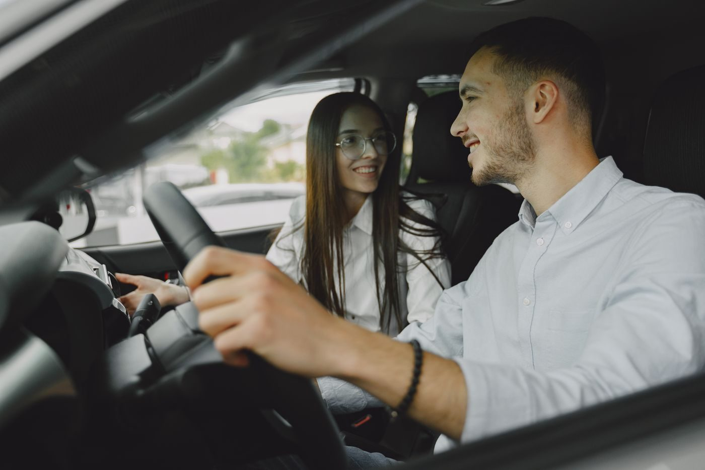
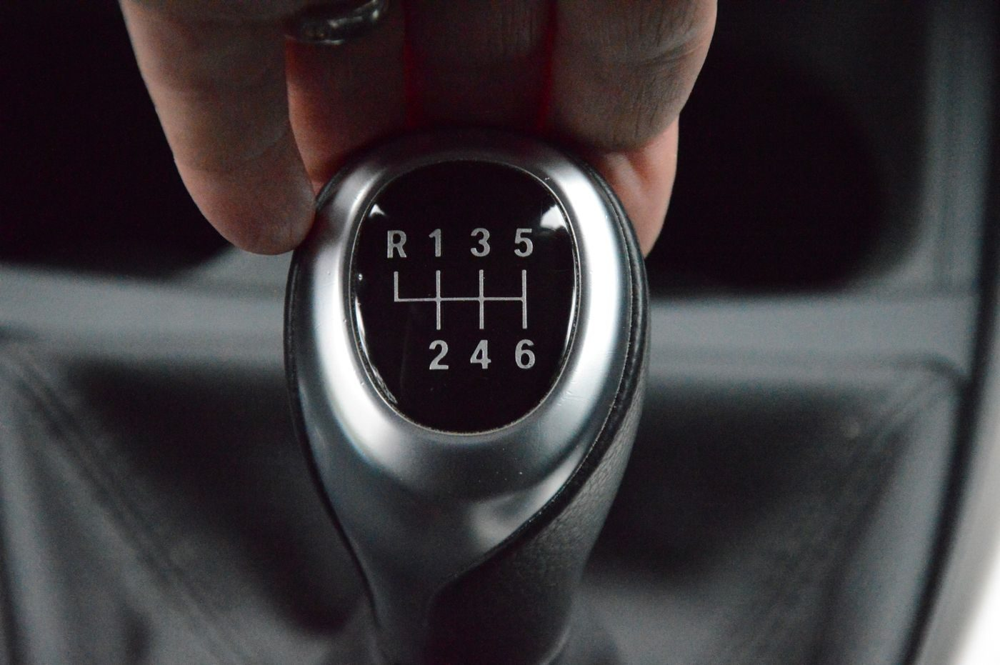

Răbdare în loc de țipete
Majoritatea elevilor vin cu aceeași frică: „o să țipe la mine”. Aici nimeni nu țipă. Greșelile la primele lecții sunt normale: analizăm calm ce s-a întâmplat și încercăm din nou.
Lecții individuale pe cutie manuală, Skoda Fabia. Fără țipete și nervi: explic până devine clar și mă adaptez la programul dumneavoastră. De la lei pe lecție.
Drumul cu prioritate — al dumneavoastră
Majoritatea elevilor vin cu aceeași frică: „o să țipe la mine”. Aici nimeni nu țipă. Greșelile la primele lecții sunt normale: analizăm calm ce s-a întâmplat și încercăm din nou.
Doar lecții individuale. Ritmul și programul sunt adaptate pentru dumneavoastră, nu pentru o grupă.
Lucrați sau studiați — stabilim împreună ziua și ora.
Ne pregătim pe poligon și pe traseele din oraș pe care se susține examenul.
Pas cu pas, fără grabă
Poziția la volan, oglinzile, pedalele, ambreiajul. Pornim și oprim pe o platformă liniștită.
Schimbarea treptelor de viteză, virajele, intersecțiile fără trafic intens.
Sensuri giratorii, schimbarea benzii, pante, trafic intens, parcare — acolo unde de obicei e frică.
Exersăm poligonul și străzile pe care se susține examenul. Analizăm greșelile tipice.
Vă așezați la volan cu încredere, nu „la noroc”.


Mașina dumneavoastră de școală
O mașină compactă, ușor de condus. Pe ea simțiți mai repede dimensiunile mașinii și nu vă mai e frică de parcare.
Dacă învățați pe manuală, vă descurcați ușor și cu automată. Invers — e mai greu.
Din orice punct de pornire
Orele n-au fost de ajuns — mai adăugăm practică, până vă simțiți sigur pe volan.
N-ați stat niciodată la volan — începem de la bun început.
N-ați condus de mult sau vă temeți de oraș — vă redăm încrederea.
Ne pregătim țintit pe poligon și pe trasee.
Singura limită — prețul
Plata pentru fiecare lecție, fără costuri ascunse. Programul exact îl discutăm la telefon.
Sfârșitul tuturor restricțiilor
Mă temeam de ambreiaj ca de foc. După câteva lecții porneam liniștită din rampă. Nu a ridicat vocea niciodată.
Am luat ore suplimentare după școala auto. Am trecut prin toate locurile grele ale traseului — la examen totul mi-a fost cunoscut.
Aveam permis de 5 ani, dar nu ieșeam în oraș. Acum duc singură copilul la grădiniță.
Punct de informare
Lecția standard durează 90 de minute, ca la școlile auto. Durata exactă o stabilim la programare.
Depinde de nivelul cu care veniți. După prima lecție vă spun sincer de câte veți avea nevoie.
Locul de întâlnire îl stabilim la telefon — astfel încât să vă fie comod să ajungeți.
Da. Luați o lecție — vedeți dacă vi se potrivește formatul și abia apoi decideți.
Nu, lecțiile sunt doar pe cutie manuală. În schimb, după ea, automata se învață într-o seară.
Sunați sau scrieți pe Viber/WhatsApp — alegem împreună prima zi și ora.